Spring 2021 Capstone Symposium
Physics
June 11, 2021
Click here to join the Zoom room for the live Physics presentations.
9:00 AM - 9:15 AM
Welcome and Introductions
By Dr. Dan Jaffe
Division Chair of Physical Sciences
-
9:15 AM - 9:30 AM
The Hunt for Neutrons: High Energy Positron to Be-9 Photoneutron Conversion for Aerospace Propulsion Applications
Howard Oh
Physics (B.S.)
Mathematics Minor
Faculty Advisor: Dr. Subramanian Ramachandran
- 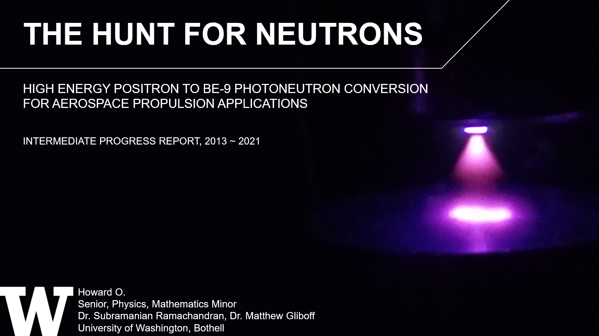
-
9:30 AM - 9:45 AM
Radiation Therapy: A brief history about the discovery & development of radiation therapy
Jewell Carr
Physics (B.S.)
Mathematics Minor
Faculty Advisor: Dr. Matthew Gliboff
-
9:45 AM - 10:00 AM
Correlations Between Wind Conditions and Dairy Farming in Snohomish County
Satveer Sandhu
Physics (B.S.)
Faculty Advisor: Dr. Eric Salathé
- 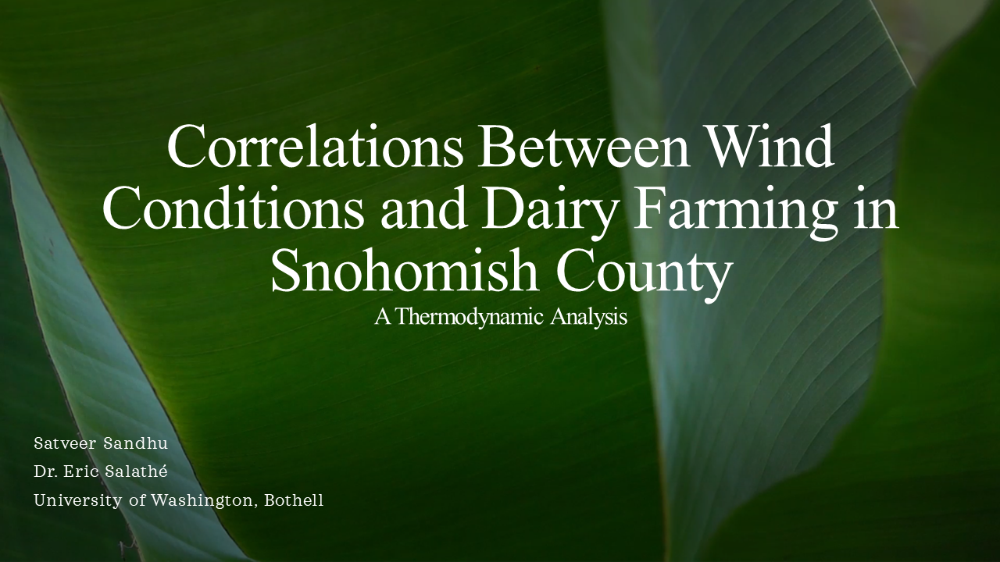
-
10:00 AM - 10:15 AM
Characterizing Thoughts and Attitudes of Instructors on Resource Based Materials
Katie Marvin
Physics (B.S.)
Faculty Advisor: Dr. Amy Robertson
- 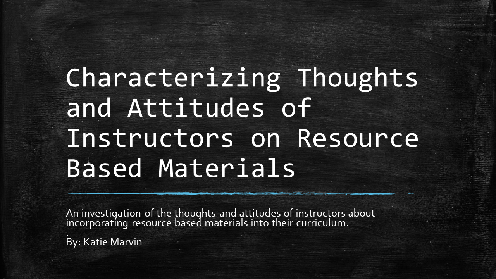
5 Minute Break
-
10:20 AM - 10:35 AM
Offshore vs. Onshore Wind Energy: Is the Future of Clean Energy at Sea?
Gregory Van Court
Physics (B.S.)
Faculty Advisor: Dr. Matthew Gliboff
- 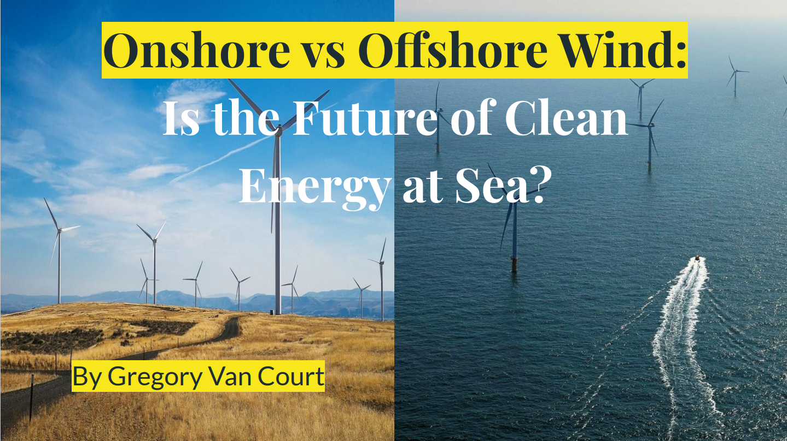
-
10:35 AM - 10:50 AM
Semiconductor Materials for Ultra High Frequency Transistors
Pongpak Techagumthorn
Physics (B.S.)
Faculty Advisor: Dr. Subramanian Ramachandran
-
10:50 AM - 11:05 AM
Pacific Northwest Heat Waves and Public Health
Samantha Dronenburg
Physics (B.S.)
Faculty Advisor: Dr. Eric Salathé
- 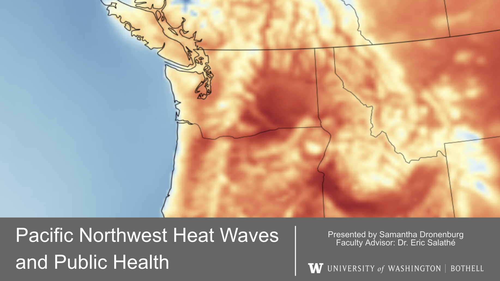
-
11:05 AM - 11:20 AM
Improving LISA's Galactic Binary Analysis Software with Parallelization
Kyle Gersbach
Computer Science & Software Engineering (B.S)
Physics (B.S)
Faculty Advisor: Dr. Joey Key
Mentor: Tyson Littenburg
- 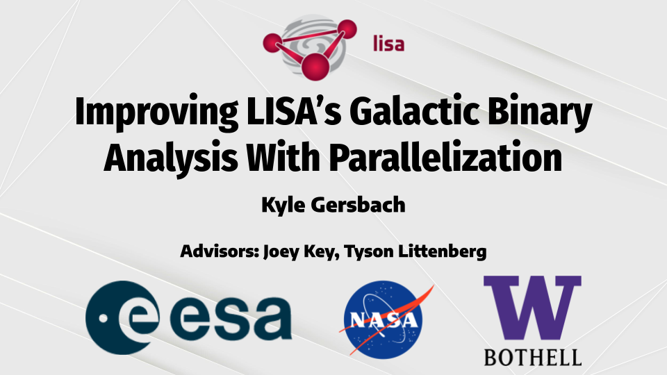
-
11:20 AM - 11:35 AM
Cost and Waste Analysis of the 6 Main Sources of Electricity in the United States
Jason Vance
Physics (B.S.)
Mathematics Minor
Faculty Advisor: Dr. Matthew Gliboff
- 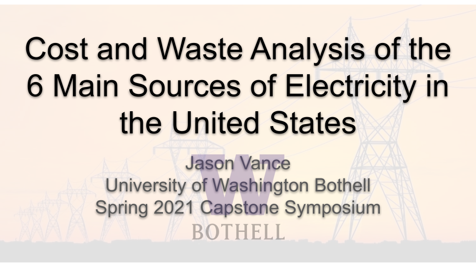
5 Minute Break
-
11:40 AM - 11:55 AM
The Atmospheres on Earth-like Planets: Extensive Literature Research to learn the most current ideas of their characteristics and detections, focusing on Biosignatures.
Jin Xu
Physics (B.S.)
Mathematics Minor
Faculty Advisor: Dr. Paola Rodriguez Hidalgo
- 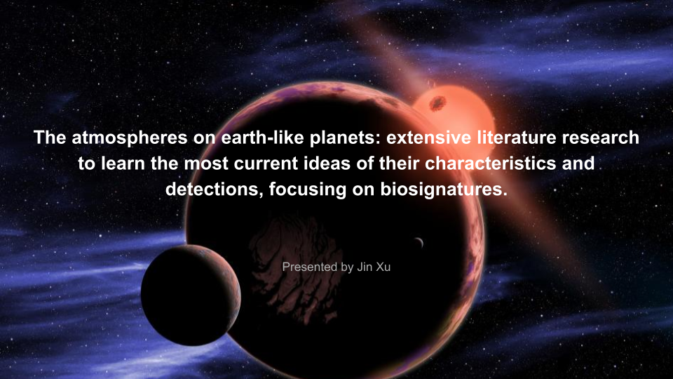
-
11:55 AM - 12:10 AM
Energy From Landfill
Kelvin Nguyen
Physics (B.S.)
Health Studies Minor
Faculty Advisor: Dr. Subramanian Ramachandran
- 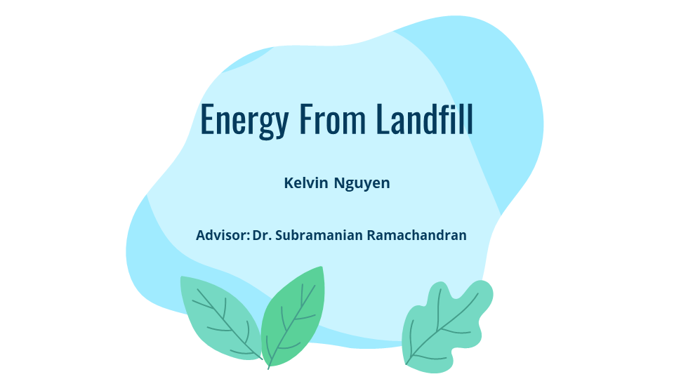
-
12:10 PM - 12:25 PM
The Stability of Lithium Cobalt Oxide Battery over a Function of Cycles
Brian Ma
Physics (B.S.)
Mathematics Minor
Faculty Advisor: Dr. Subramanian Ramachandran
- 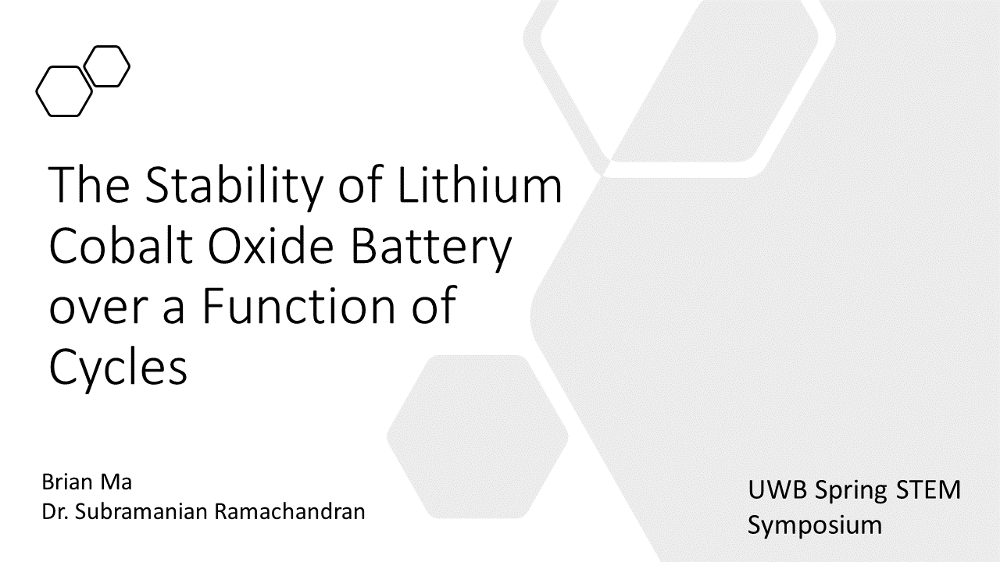
-
12:25 PM - 12:40 PM
Revisiting the Size and Waiting Time Distributions of Pulsar Glitches
Christine Ye
Physics (B.S.)
Faculty Advisor: Dr. Joey Key
- 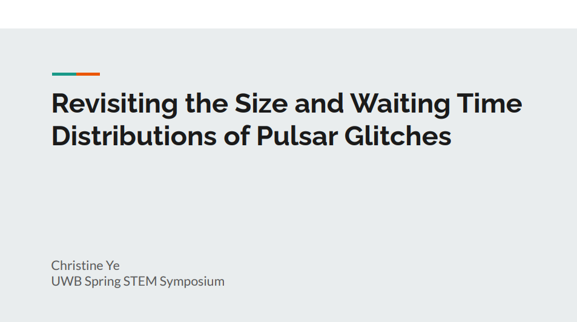